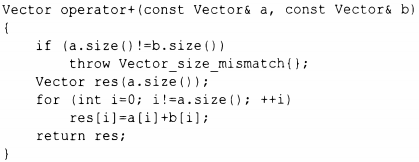
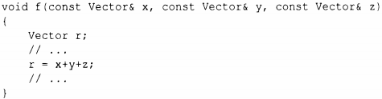
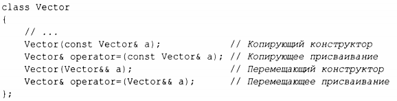
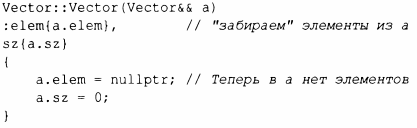
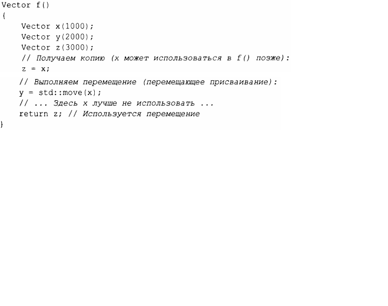
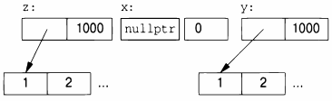

⇐5.2.1 Копирование контейнеров Содержание 5.3 Управление ресурсами⇒
Мы можем управлять копированием, определяя копирующий конструктор и колирующее присваивание, но само копирование может быть дорогостоящим для больших контейнеров. Мы избегаем затрат на копирование, когда передаем объекты функции с использованием ссылок, но не можем вернуть ссылку на локальный объект в качестве результата (локальный объект будет уничтожен к тому моменту, когда у вызывающей функции появится возможность взглянуть no ссылке). Рассмотрим следующий код:
Возврат из оператора + включает копирование результата из локальной переменной res в некоторое место, где к нему сможет обратиться вызывающая функция. Мы можем использовать этот оператор + следующим образом:
Это приведет к копированию Vector no крайней мере дважды (no одному для каждого использования оператора + ). Если вектор большой - скажем, 10 000 double, - это может смущать. Больше всего смущает то, что res в opera tor+ () после копирования никогда не используется вновь. В действительности нам не нужно копирование; мы просто хотим получить результат из функции. По сути, мы хотим переместить вектор, а не скопировать его. К счастью, мы можем указать свое намерение:
При наличии такого определения, чтобы реализовать передачу возвращаемого значения из функции, компилятор выберет перемещающий конструктор. Это означает, что r=x+y+z не будет содержать копирования векторов; вместо этого векторы просто перемещаются.
Как обычно, определение перемещающего конструктора Vector тривиально:
& & означает "ссылка на r-значение" и является ссылкой, с которой мы можем связать r-значение. Слово "r-значение" (rvalue) является дополнением к 1-значению (lvalue), которое грубо означает "нечто, что может появиться в левой части присваивания". Таким образом, r-значение в первом приближении является значением, которому нельзя выполнить присваивание, например целое число, возвращаемое вызовом функции. Таким образом, r-ссылка является ссылкой на нечто, чему никто иной ничего не может присвоить, поэтому мы можем безопасно "украсть" ее значение. Примером может служить локальная переменная res в operator+ () в примере с Vector.
Перемещающий конструктор не принимает константный аргумент: в конечном счете перемещающий конструктор должен удалить значение из своего аргумента. Аналогично определяется и перемещающее присваивание.
Операция перемещения применяется, когда r-ссылка используется в качестве инициализатора или как правая сторона присваивания.
После перемещения перемещаемый объект должен находиться в состоянии, которое позволяет выполнить деструктор. Как правило, мы также разрешаем присваивание перемещенному объекту. Это предполагают и алгоритмы стандартной библиотеки (глава 12, "Алгоритмы"). Наш Vector поступает именно таким образом.
Когда программист знает, что значение больше не будет использоваться, но компилятор недостаточно умен, чтобы это понять, программист может указать ему на этот факт:
Функция стандартной библиотеки rnove ( ) в действительности ничего не делает; она просто возвращает ссылку на свой аргумент, для которой возможно перемещение - r-ссылку; это всего лишь разновидность приведения (§4.2.3).
Непосредственно перед return мы имеем следующее.
Когда мы возвращаемся из f ( ) , переменная z уничтожается, после того как ее элементы перемещены из f () оператором return. Однако деструктор у выполняет delete [] для его элементов.
Компилятор обязан (согласно стандарту С++) устранить большинство копирований, связанных с инициализацией, поэтому перемещающие конструкторы вызываются не так часто, как вы могли себе представить. Такое исключение копирования (сору elision) убирает даже незначительные накладные расходы. С другой стороны, неявно исключить копирование или перемещение из присваиваний, как правило, невозможно; поэтому перемещающее присваивание может иметь решающее значение для производительности.